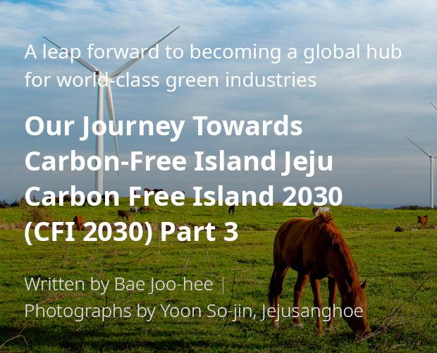

기획취재콘텐츠
- Home
- 제주라이프
- 기획취재콘텐츠
CFI 2030(Carbon Free Island 2030) Part 3새로운 글



Renewable energy industry, the solution for energy self-reliance and the preservation of Jeju’s pristine natural environment
The surrounding ocean, the warm sunshine beating down, the wind blowing at times gently while at others fiercely, and the waves fluctuating in the wind. These are the gifts bestowed by Jeju Island’s natural environment. At the same time, these elements constitute Jeju’s abundant supply of renewable energy, and based on these natural resources, Jeju has long been engaged in R&D and the utilization of renewable energy.
It has been almost a half century since wind power generation was first adopted on Jeju Island in 1970. Over those years, the wind farm model has evolved into the type we see today. In the 1980s, photovoltaic power generation was adopted on the island but both wind power and solar PV remained in the R&D phase until the late 1990s when Jeju opened Korea’s first commercial wind farm. It has since grown into a national hub for wind power generation.
- Jeju Island has long been developing renewable energy sources based on its abundant sunshine and wind
Gasiri Wind Farm featuring wind power generators and solar panels.
photographed by Lim Han-soon, a winner of the Eco-Friendly Photo Contest. ⓒJeju Energy Corporation -
Gasiri Wind Farm featuring wind power generators and solar panels.
photographed by Lim Han-soon, a winner of the Eco-Friendly Photo Contest. ⓒJeju Energy Corporation -
- View of Dongbok-ri Onshore Wind Farm ⓒJeju Energy Corporation -
Wind farms on Jeju Island currently generate 290 MW of electricity (onshore and offshore combined), while solar panels generate 260 MW, accounting for the two largest shares of renewable energy on the island. Other renewable energy sources include biogas from animal manure, waste products such as waste wood, solar heat, and wave power which can generate electricity. Currently wave power generation is being implemented on Jeju as a pilot project for substantiation. As of 2019, renewable energy sources accounted for 14.03% of Jeju’s electricity system, well above the national average of 8%. Utilizing a variety of natural resources, Jeju Island boasts the country’s highest penetration of renewable energy.
- Sinchang Windmill Coastal Road featuring an offshore wind farm
photographed by Kim Tae-ho, a winner of the Eco-friendly Photo Contest. ⓒJeju Energy Corporation -
photographed by Kim Tae-ho, a winner of the Eco-friendly Photo Contest. ⓒJeju Energy Corporation -
Jeju Island is specialized in the wind power industry due to its solid institutional foundation. The Special Act on the Establishment of Jeju Special Self-Governing Province and the Development of Free International City transferred the licensing authority for wind power projects on the island to the Jeju Governor from the Minister of Trade, Industry and Energy. The province also established a separate licensing standard reflecting regional characteristics, enacted ordinances on district designation, and issued relevant public notifications. District designation refers to the preliminary investigation on candidate sites for wind power generation and the eventual designation. It offers a legal foundation for recruiting designated villages, and for conducting evaluation and deliberation of wind farm candidate sites. This system has taken root for the first time on Jeju and similarly the planned location system for renewable energy has been introduced on a national scale but was fully utilized due to the revision of related laws.
Wind power projects tend to be massive in scale. Progress comes slowly as significant amounts of funding and land are required, but above all things the acceptance of local residents must be considered. This is why Jeju Energy Corporation, a major operator of wind power projects, pays close attention to measures for securing the acceptance of local residents. In the past, project operators had applied for licensing without any consultation with representatives of villages, often resulting in conflicts. Currently, ordinances on district designation have been applied to recruit candidate villages and deliberate with stakeholders, which has helped minimize costs and time loss which may result from conflicts.
Renewable energy target for 2025 (New distribution target +761.9(MW), New energy output +1,663,778(MW))
| Category | Current status(MW) 2019 | New distribution target(MW) | New energy output(MW) |
|---|---|---|---|
| Photovoltaics | 245 | 291.2 | 369,882 |
| Bio/waste power | 7.2 | 21.2 | 167,141 |
| Onshore wind power | 239 | 120 | 241,776 |
| Fuel cell | - | 1.5 | 9,855 |
| Marine/small hydro power | 0.5 | 3 | 21,024 |
| Offshore wind power | 30 | 325 | 854,100 |

Though renewable energy industries keep expanding quantitatively and qualitatively, there remain some limitations to derivative industries or services. For derivative industries, maintenance of power generation facilities accounts for a large part. For manufacturing industries with high value added or the power generation industry, however, financial, economic, managerial, and legal services associated with the industries still require institutionalization and nurturing of human resources. Nevertheless, experts believe that the renewable energy market has room for scalability and promoting derivative industries requires not only resolving technical problems but also securing budgets and institutional support from the central government.
Unstoppable journey towards a carbon-free island
- Sinchang-ri Wind Farm
photographed by Lee Seung-geon, a winner of the Eco-Friendly Photo Contest. ⓒJeju Energy Corporation -
photographed by Lee Seung-geon, a winner of the Eco-Friendly Photo Contest. ⓒJeju Energy Corporation -
Jeju Island is making strides towards its Carbon-Free Island vision based on the two pillars of electric vehicles and the renewable energy industry. As demonstrated by the development of both industries, Jeju is leading the country with regard to every aspect, including laws and regulations, planning and implementation, and the level of awareness among local residents. Though leaders may face many unforeseeable challenges ahead, their paths will guide countless followers. Jeju Island takes pride in being a leader in the field of energy transition, while at the same time considering it a responsibility and an obligation.